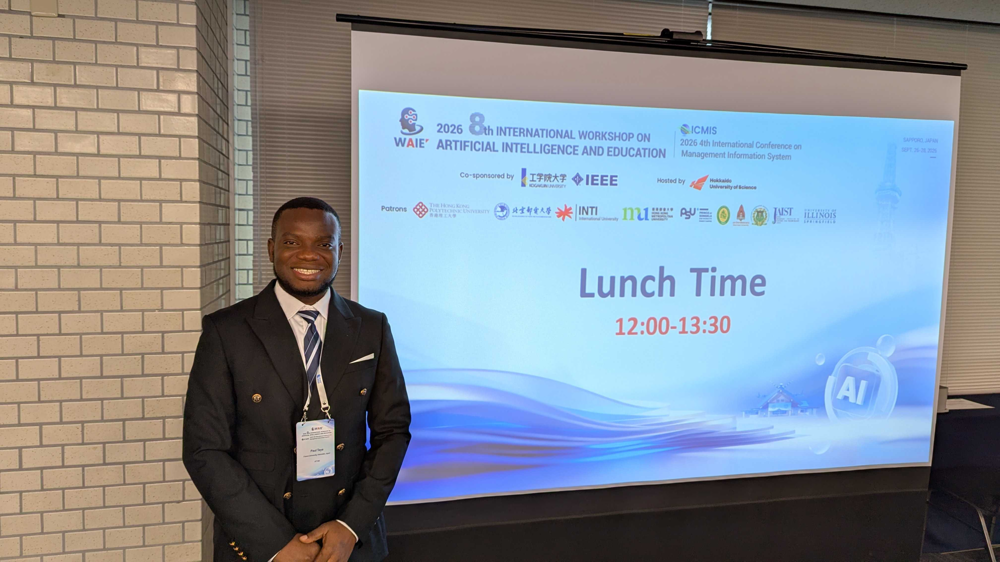
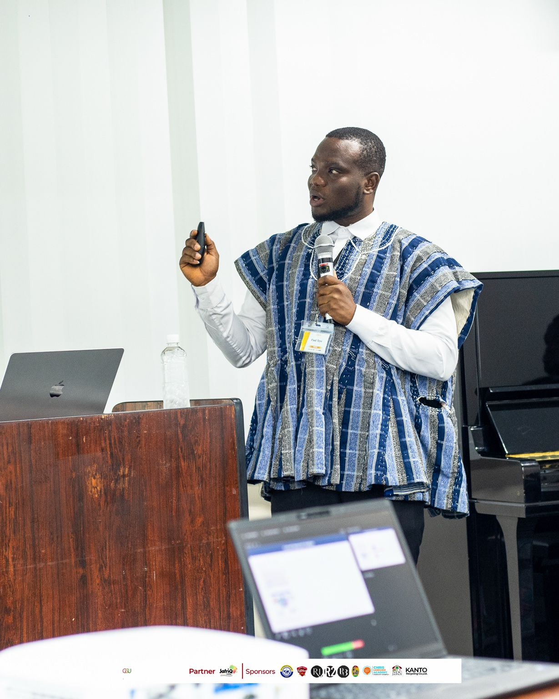
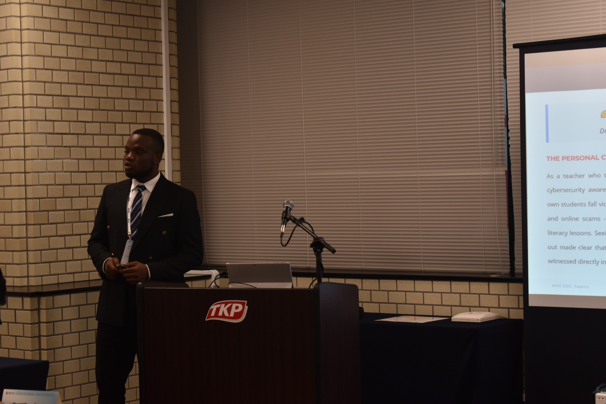
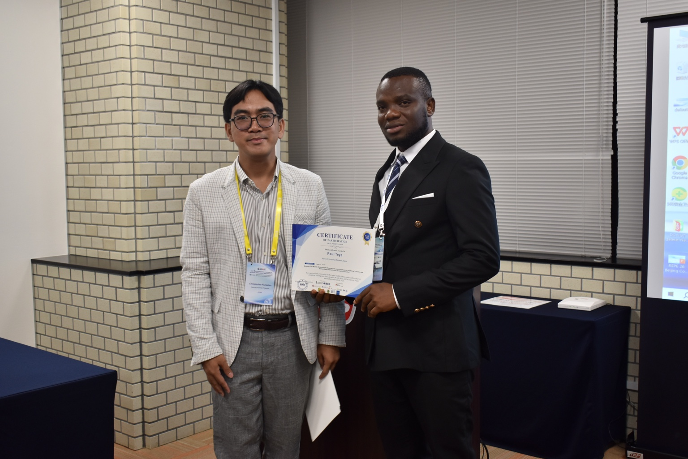

Human-centered
Start with people, their contexts, and their real needs.
Educator · Researcher · Technology Enthusiast
I’m Paul Teye, an educator and graduate researcher at Future University Hakodate, Japan. My work explores AI-adaptive cybersecurity education, machine learning, and practical approaches to helping people make safer decisions in an increasingly digital world.
Currently pursuing graduate studies in Systems Information Science at Future University Hakodate, Japan.
IN THE FIELD
Snapshots from academic conferences and research presentations.




01 / ABOUT
I began my professional journey as a teacher in Ghana, where I saw how education can open doors—and how digital technologies bring both opportunities and risks. That experience continues to shape my approach to research and technology.
Start with people, their contexts, and their real needs.
Use research and evaluation to understand problems and improve decisions.
Turn knowledge into useful learning experiences and community value.
02 / EDUCATION
From teacher education in Ghana to graduate research in Japan.
2026 — Present
Future University Hakodate · Hakodate, Japan
Graduate study in Intelligent Information Science, developing research at the intersection of cybersecurity education and adaptive learning.
2021 — 2024
University of Education, Winneba · Ghana
Best Graduating Student / Valedictorian; GPA 3.91/4.00 across 129 credits.
Earlier study
Presbyterian College of Education · Akropong, Ghana
Built the professional foundation for classroom teaching and educational leadership.
03 / FEATURED RESEARCH
My current research explores how people understand digital risks—and how learning experiences can help close the gap between knowing and doing.
Examining the Cybersecurity Awareness–Behavior Gap Among Transition-Age Students.
This work investigates the gap between cybersecurity knowledge and real-world protective behavior as young people move toward greater digital, financial, and social independence.
Design direction: an adaptive cybersecurity training experience that responds to learner needs, decision patterns, and practical risk scenarios.
04 / SELECTED WORK
A research-led platform concept for practical, scenario-based cybersecurity learning for transition-age students.
Co-authored conference research on machine learning for predicting student engagement and academic performance in digital learning environments.
A study-abroad initiative sharing lived experience, scholarship guidance, and practical insights for African students exploring international education.
Teacher-development activities focused on cybersecurity awareness, data protection, and responsible use of AI tools.
05 / EXPERIENCE
Shama Senior High School · Ghana
Taught ICT and supported the school’s ICT laboratory before beginning graduate studies in Japan.
Korlieteh DA Basic School · Ghana
Taught English, Mathematics, Science, and Social Studies; contributed to curriculum planning and teaching coordination.
University of Education, Winneba / GNAT Sutapong Circuit
Served as General Course Representative and youth organizer, supporting communication, coordination, and community engagement.
LET’S CONNECT
I’m open to research collaboration, educational initiatives, speaking opportunities, and conversations about cybersecurity and AI in education.
Contact Paul ↗